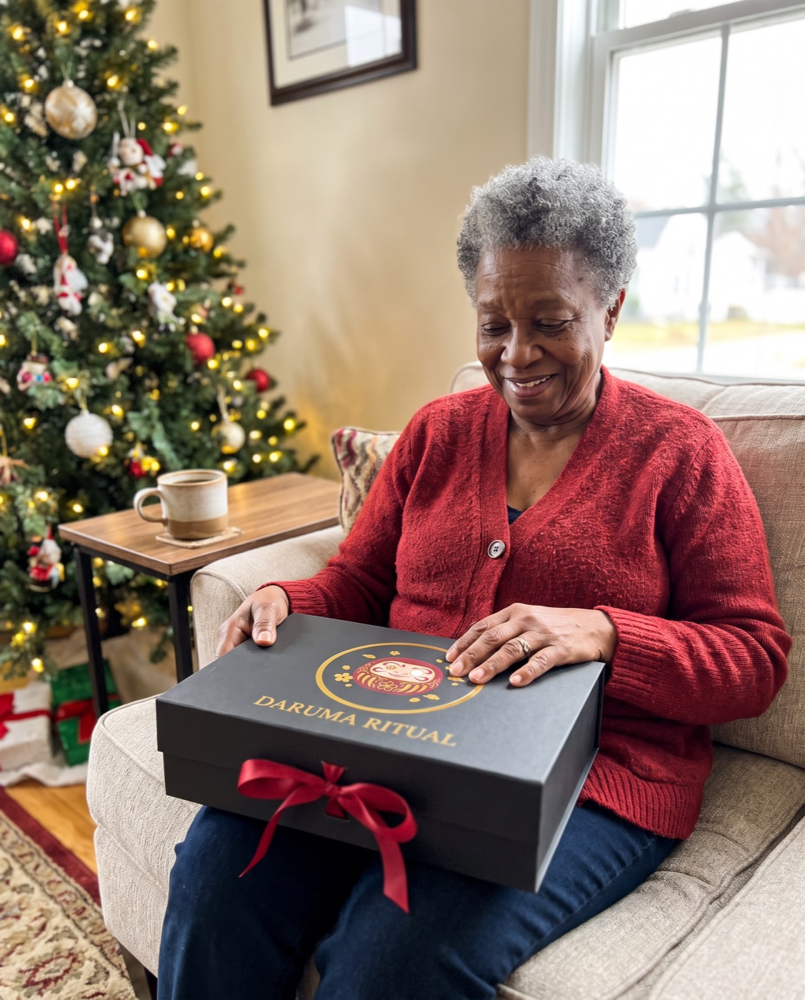
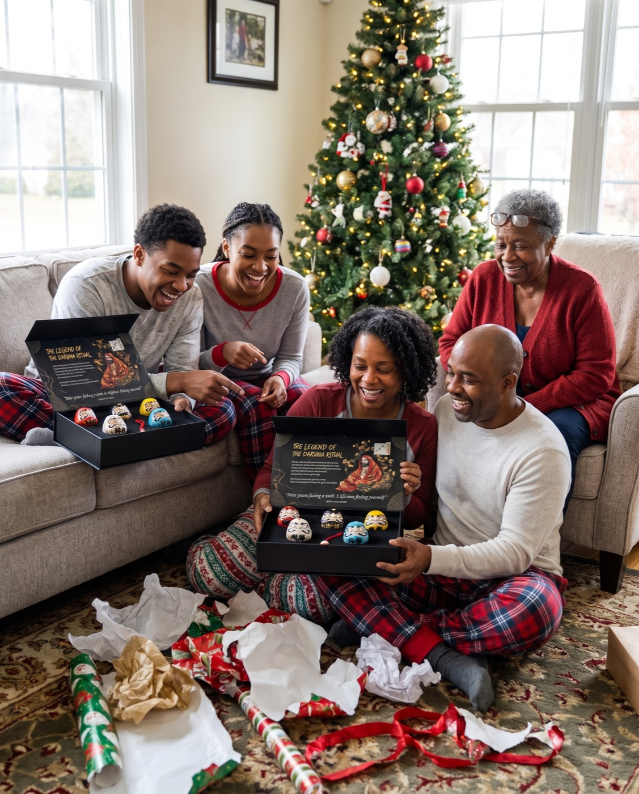
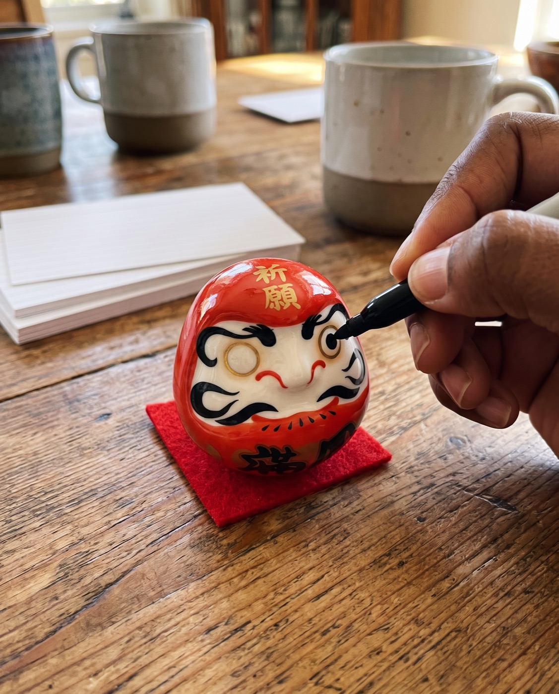
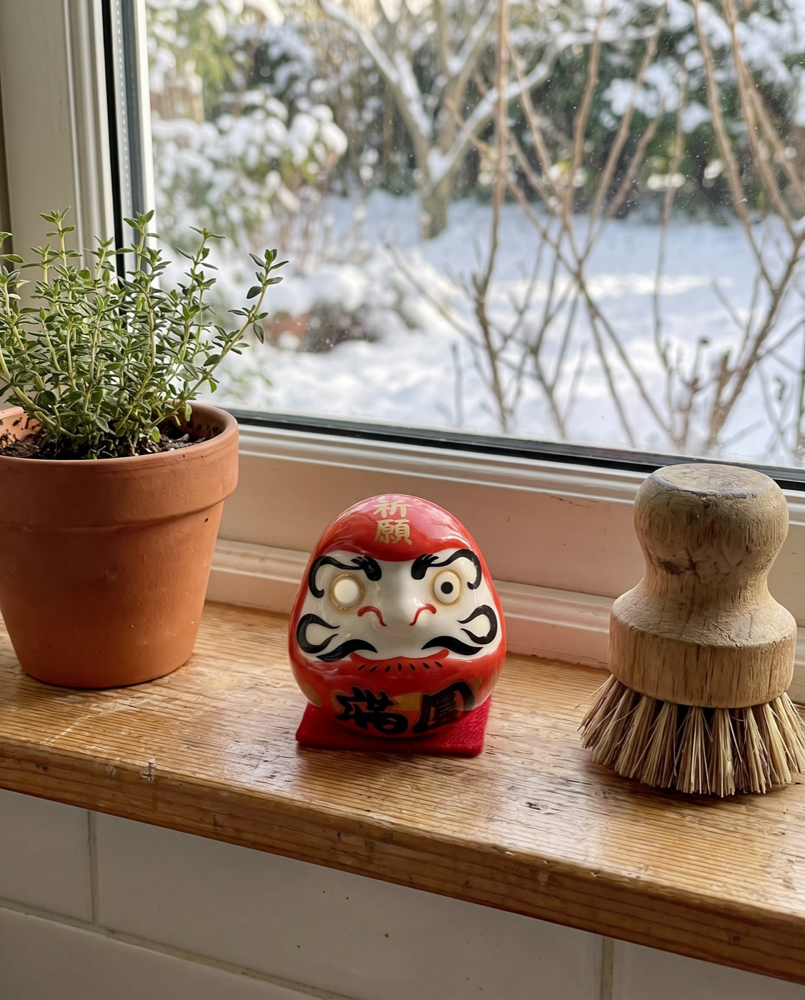

A Christmas story
I Gave My Whole Family the Same Gift This Christmas. Nobody Has Forgotten It.
A grandmother on swapping the gift cards and sweaters for a 400-year-old Japanese ritual, and what happened at her kitchen table on New Year's Day.
A story written by Daruma Ritual to show how the ritual is used. The customer messages quoted on this page are real.

For eleven years, I gave my grandchildren gift cards.
It wasn't laziness. They're grown now, they live in three different cities, and every year I'd stand in a store and have no idea what any of them wanted. So I'd buy a card, write something sweet inside it, and watch them say thank you and put it in a pocket.
Last Christmas, I decided I was done giving presents that disappear in a pocket.
1. The year I wanted something different
My late husband used to say the best thing you can give someone is a reason. A reason to call, a reason to try, a reason to come home. I'd been thinking about that all autumn.
My daughter Simone is the one who showed me the Daruma. She'd seen a video of one, a round little doll with two blank white eyes, and sent it to me with three question marks.
I looked it up that night. The tradition is more than 400 years old. In Japan, people buy a Daruma at the New Year, choose one goal, and paint one eye. The doll keeps watching with that one eye until the goal is done. Then you paint the other.
I sat there in my kitchen and thought: that's it. That's a reason.
2. One box, five colours, five people
I ordered two sets. Each set has five ceramic Daruma, and each colour stands for something different: red for fortune, white for wealth, black for strength, yellow for safety, blue for peace.
When they arrived I didn't even wrap them. The box is black with a gold emblem and a magnet that closes with a little click, and it looked better than any paper I owned. I just tied a red ribbon around each one.
Inside the lid there's a card that tells the old story: a monk named Bodhidharma who sat facing a wall for nine years and wouldn't give up. I read it twice before Christmas. I'm not ashamed to say I got a little teary.
Official Daruma Ritual store · Free tracked shipping worldwide · 30-day returns
3. Christmas morning
We do presents after breakfast. Simone, her husband Marcus, my grandson Andre, my granddaughter Jade and her new husband. Six of us around the tree in my living room, coffee everywhere.

I made them open the boxes together. When the lids came up, the room went quiet for a second. Then Andre said, "Grandma, why don't they have eyes?"
So I told them. One goal each. Pick a colour. On New Year's Day, we paint the first eye together, right here at my table.
I watched them pass the dolls around and argue about colours like they were twelve years old again.
4. The week nobody stopped talking about it
Here's what surprised me. Gift cards get a thank-you. These got questions.
Andre called me on the 28th to ask whether a goal had to be big. Simone texted a photo of a list she'd crossed out four times. Marcus, who never says much, asked if he could choose one for work.
For the first time in years, my Christmas present was the thing my family was talking about the week after Christmas.
You don't paint the eye for the doll. You paint it for the person sitting next to you.
5. New Year's Day at my kitchen table
They all came back on the first. I put out a black marker, a stack of index cards and a pot of coffee.
Everyone wrote their goal on a card. Some of them read theirs out loud. Some didn't, and that's fine too. Then, one at a time, we painted the first eye. It's the doll's own left eye, which is the one on your right as it faces you.

I kept the red one for myself. My goal is between me and the doll.
6. Where they live now
Andre's is on his desk at work. Jade sent me a picture of hers on the bookshelf in their new apartment. Mine is on the windowsill above my sink, where I see it every morning.

I don't know which of us will paint the second eye first. That isn't really the point. The point is that every one of them has something sitting on a shelf that says: someone believed you'd do this.
What I'd tell another grandparent
This is for you if…
- Your family is spread out and you want one gift that brings them together
- You're tired of gift cards and sweaters
- You like the idea of a New Year's tradition you can start yourself
Skip it if…
- You want something they'll use up and forget
Plan a little. Order early, because international post is slower in December. And buy one more than you think, because somebody will bring a new partner.
Messages from real customers
When I looked into the company, I read some of the notes customers had sent them. These two could have been written by me:
“Finally I was able to perform our first ritual with my daughter and her husband. I will be purchasing more sets to give to my other children. … this was a good way to have them set goals to focus on all of the good things in their lives.”
“I was absolutely wowed when I received the package today. Both sets arrived completely unharmed. I am going to give them as holiday gifts. Blessed and grateful.”
The sets I ordered
I bought two sets. Each box has its own chiming keychain, and with two sets the order came with a $20 gift card. Here are the prices:
 1 Premium Set
1 Premium Set5 Daruma + 1 chiming keychain
2 Premium Sets10 Daruma + 2 keychains + $20 gift card free
3 Premium Sets15 Daruma + 3 keychains + $20 gift card free
Each set: 5 ceramic Daruma, matte-black magnetic box, legend & ritual cards. Free tracked shipping.
Official Daruma Ritual store · Free tracked shipping worldwide · 30-day returns
Questions my friends asked me
What exactly is in a set?
Five ceramic Daruma in red, white, black, yellow and blue, a matte-black magnetic gift box with a velvet tray, the legend & ritual cards, and a chiming Daruma keychain.
Is a pen or marker included?
No. Any black marker or brush pen works for the eyes.
Do I need to know anything about Japanese culture?
No. The ritual card in the box explains the steps in a minute.
How does shipping work?
Shipping is free and tracked to every country. The delivery estimate is shown at checkout; international post is slower in December, so order early for Christmas.
What if it's not right?
You have 30 days after it arrives to request a return.
Official Daruma Ritual store · Free tracked shipping worldwide · 30-day returns